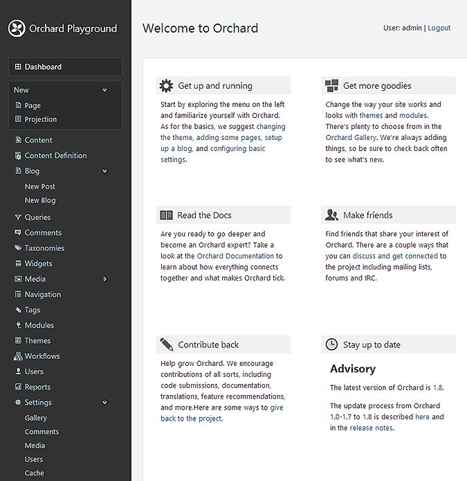

This topic targets, and was tested with, the Orchard 1.8 release.
- 本主题针对Orchard 1.8版本进行了测试，并进行了测试。*
The Orchard dashboard lets you manage your website, change its appearance, add content, and enable and disable Orchard features. When you are logged into your website, you can access the dashboard by clicking the Dashboard link at the bottom of your default home page.
Orchard仪表板可让您管理网站，更改其外观，添加内容以及启用和禁用Orchard功能。登录到您的网站后，您可以通过单击默认主页底部的仪表板链接来访问仪表板。
When you open the dashboard, you see a list of application features and settings on the left side of the page. This list is divided into sections of related features. Each expandable section can be collapsed to show only the section title. If you click a section title, the first feature in that section is selected. This list changes as you enable and disable Orchard features. For example, the Blog section will have a set of additional collapsible items under it (as shown) after you actually create a blog. The New section allows you to create new instances of default content types as well as any custom content types that you define. The right side of the page displays the settings that are available for the selected feature. The following image shows the contents of the dashboard.
打开仪表板时，您会在页面左侧看到应用程序功能和设置的列表。此列表分为相关功能部分。每个可展开的部分都可以折叠以仅显示部分标题。如果单击节标题，则会选择该节中的第一个特征。启用和禁用Orchard功能时，此列表会更改。例如，在实际创建博客后， Blog 部分下面会有一组其他可折叠项目（如图所示）。 New 部分允许您创建默认内容类型的新实例以及您定义的任何自定义内容类型。页面右侧显示可用于所选功能的设置。下图显示了仪表板的内容。

Feature Settings Available in the Dashboard
仪表板中可用的功能设置
The following table shows each of the dashboard sections and briefly describes the available settings.
下表显示了每个仪表板部分，并简要介绍了可用的设置。
Section Title | Description
章节标题|描述
------------- | -----------
- | -----------
Dashboard | Contains the dashboard and displays the main ("Welcome to Orchard") page. This page contains a number of helpful links for working with Orchard. The page also shows the Orchard version that is running, and displays advisories from http://orchardproject.net (when advisories are available) that can notify you when a new version is available or when an important update needs to be applied.
仪表板|包含仪表板并显示主页面（“欢迎来到Orchard”）页面。此页面包含许多与Orchard合作的有用链接。该页面还显示正在运行的Orchard版本，并显示来自[http://orchardproject.net]（http://orchardproject.net）的建议（当提供建议时），可在新版本可用时通知您或何时需要应用重要更新。
New | Lets you create new instances of default content types or of custom content types that you define in the Content Definition screen. For more information, see Creating Custom Content Types.
新的|允许您创建在内容定义屏幕中定义的默认内容类型或自定义内容类型的新实例。有关更多信息，请参阅[创建自定义内容类型]（创建自定义内容类型）。
Content | Lets you manage the instances of your content types. For example it lets you create pages, edit or remove existing pages, and publish pages. For more information, see Adding Pages to Your Site
内容|允许您管理内容类型的实例。例如，它允许您创建页面，编辑或删除现有页面以及发布页面。有关详细信息，请参阅[向您的站点添加页面]（将页面添加到您的站点）
Content Definition | Lets you manage existing content types as well as creating your own. For more information, see Content Types
内容定义|允许您管理现有内容类型以及创建自己的内容类型。有关更多信息，请参阅[内容类型]（内容类型）
Blog | Lets you add a blog to your website, create new blog posts, and manage your blog. For more information, see Adding a Blog to Your Site.
博客|允许您向您的网站添加博客，创建新的博客文章以及管理您的博客。有关详细信息，请参阅[向您的站点添加博客]（添加博客到您的站点）。
Queries | Lets you add new queries and edit or remove existing queries.Queries are later used for display lists of content items through the site.
查询|允许您添加新查询并编辑或删除现有查询。稍后，查询将用于通过站点显示内容项的列表。
Comments | If your website is configured to allow users to post comments, lets you manage the posted comments. For more information, see Moderating Comments.
评论|如果您的网站配置为允许用户发表评论，则可以管理发布的评论。有关更多信息，请参阅[审核评论]（审核 - 评论）。
Taxonomies | Lets you manage taxonomy terms. Later on you can use them to categorize content items and display or hide them in different ways according to their taxonomy.
分类|允许您管理分类术语。稍后，您可以使用它们对内容项进行分类，并根据其分类法以不同方式显示或隐藏它们。
Widgets | Lets you manage the widgets that appear on the pages of your site. For more information, see Managing widgets.
小部件|允许您管理网站页面上显示的小部件。有关更多信息，请参阅[管理窗口小部件]（管理窗口小部件）。
Media | Lets you add or remove folders that contain media. For more information, see Adding and Managing Media Content.
媒体|允许您添加或删除包含媒体的文件夹。有关更多信息，请参阅[添加和管理媒体内容]（添加和管理媒体内容）。
Navigation | Lets you add or remove items in the main menu and define additional navigation menus. For more information, see Navigation and Menus.
导航|允许您在主菜单中添加或删除项目，并定义其他导航菜单。有关更多信息，请参阅[导航和菜单]（导航和菜单）。
Tags | Lets you add or remove content tags for your site. For more information, see Organizing Content with Tags.
标签|允许您为站点添加或删除内容标记。有关详细信息，请参阅[使用标签整理内容]（使用标签组织内容）。
Modules | Lets you download, install, and manage modules and features on your site. For more information, see Installing Modules and Themes from the Gallery, Enabling and Disabling Features, and Installing and Upgrading Modules.
模块|允许您下载，安装和管理站点上的模块和功能。有关详细信息，请参阅[从库中安装模块和主题]（从库中安装模块和主题），[启用和禁用功能]（启用和禁用功能）和[安装和升级模块]（安装和升级 - 模块）。
Themes | Lets you install new themes and apply themes to your site. For more information, see Installing Themes and Previewing and Applying a Theme.
主题|允许您安装新主题并将主题应用于您的网站。有关更多信息，请参阅[安装主题]（安装主题）和[预览和应用主题]（预览和应用主题）。
Workflows | Lets you manage your workflows. Through workflows your site can perform simple or complex tasks based on system events or user interaction.
工作流程|允许您管理工作流程。通过工作流程，您的站点可以根据系统事件或用户交互执行简单或复杂的任务。
Users | Lets you manage users and roles for your site. For more information, see Managing Users and Roles.
用户|允许您管理站点的用户和角色。有关更多信息，请参阅[管理用户和角色]（管理用户和角色）。
Reports | Lets you manage and view reports that Orchard generates for your site.
报告|允许您管理和查看Orchard为您的站点生成的报告。
Settings | Lets you configure a variety of site settings such as the site name and culture, the default number of items per page, URLs for Gallery feeds, whether user-added comments must be approved, media file types that can be uploaded, and user registration settings. For more information see Modifying Site Settings.
设置|允许您配置各种站点设置，例如站点名称和区域性，每页的默认项目数，Gallery Feed的URL，是否必须批准用户添加的注释，可以上载的媒体文件类型以及用户注册设置。有关详细信息，请参阅[修改站点设置]（修改站点设置）。
Change History
改变历史
-
Updated for Orchard 1.8
-
更新了Orchard 1.8 *
- 4-20-14: Updated screenshot. Updated available settings on 1.8.
-
Updated for Orchard 1.1
-
更新了Orchard 1.1 *
- 3-15-11: Updated screen shot and table to show 1.1 version of the dashboard.